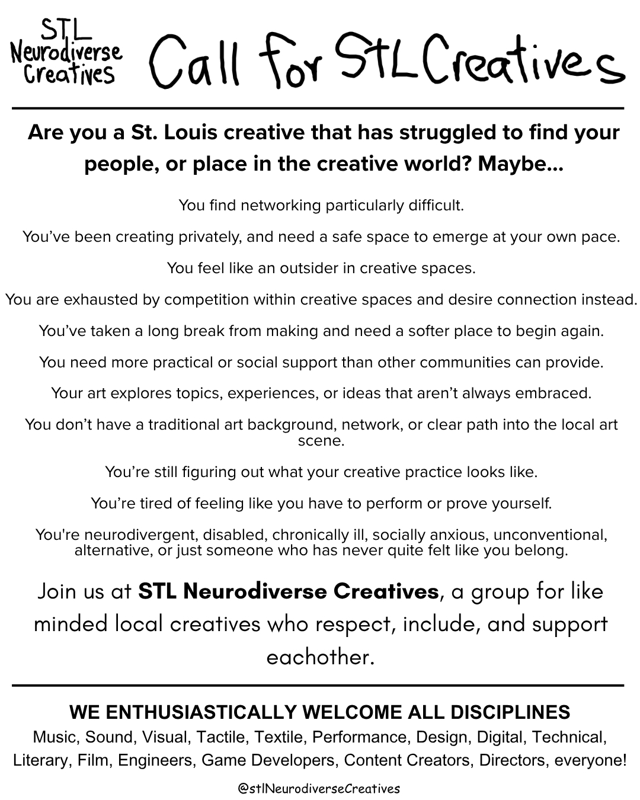

St. Louis, Missouri
Find your people. Make your work. Go at your own pace.
STLNC is a network for neurodivergent, alternative, and unconventional creatives from St. Louis to connect, collaborate, and build community together.
- Mutual respect
- Radical inclusion
- Mindful support
Are you a St. Louis creative who has struggled to find your people, or your place in the creative world? Maybe…
- You find networking particularly difficult.
- You’ve been creating privately, and need a safe space to emerge at your own pace.
- You feel like an outsider in creative spaces.
- You are exhausted by competition within creative spaces and desire connection instead.
- You’ve taken a long break from making and need a softer place to begin again.
- You need more practical or social support than other communities can provide.
- Your art explores topics, experiences, or ideas that aren’t always embraced.
- You don’t have a traditional art background, network, or clear path into the local art scene.
- You’re still figuring out what your creative practice looks like.
- You’re tired of feeling like you have to perform or prove yourself.
You’re neurodivergent, disabled, chronically ill, socially anxious, unconventional, alternative, or just someone who has never quite felt like you belong.
Join us at STL Neurodiverse Creatives, a group for like-minded local creatives who respect, include, and support each other.
We enthusiastically welcome all disciplines
- Music
- Sound
- Visual
- Tactile
- Textile
- Performance
- Design
- Digital
- Technical
- Literary
- Film
- Engineers
- Game Developers
- Content Creators
- Directors
- Everyone!
Join the directory
Sign up to be included in the directory, get access to members-only information about other creatives in town, and receive monthly news and updates from STLNC by email.
Look around
Share the call
